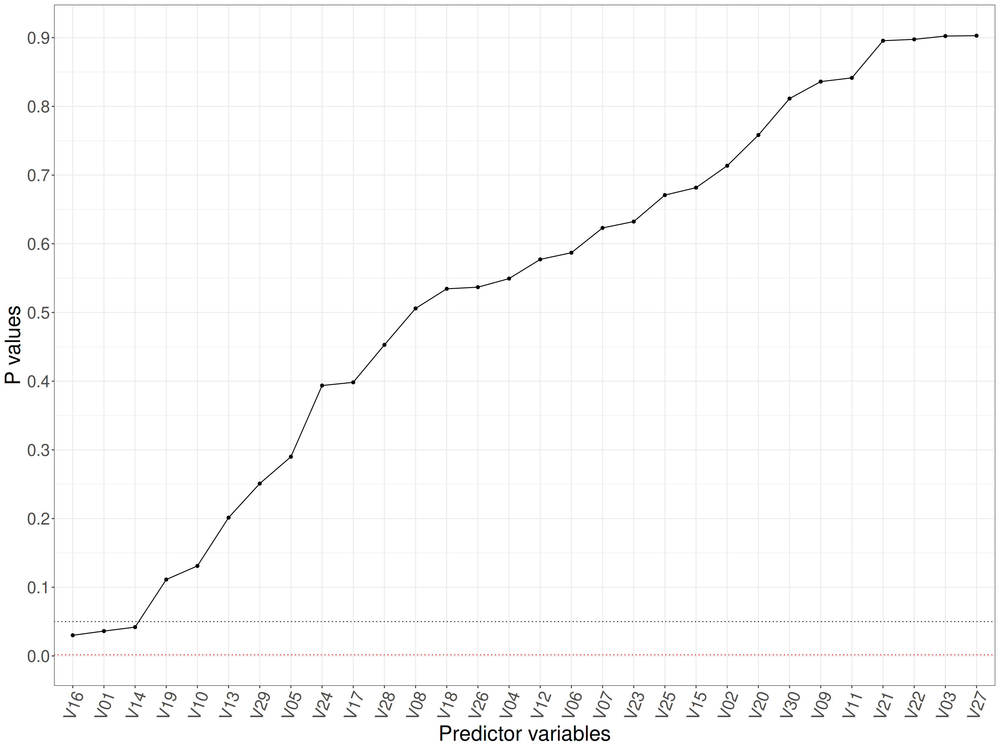
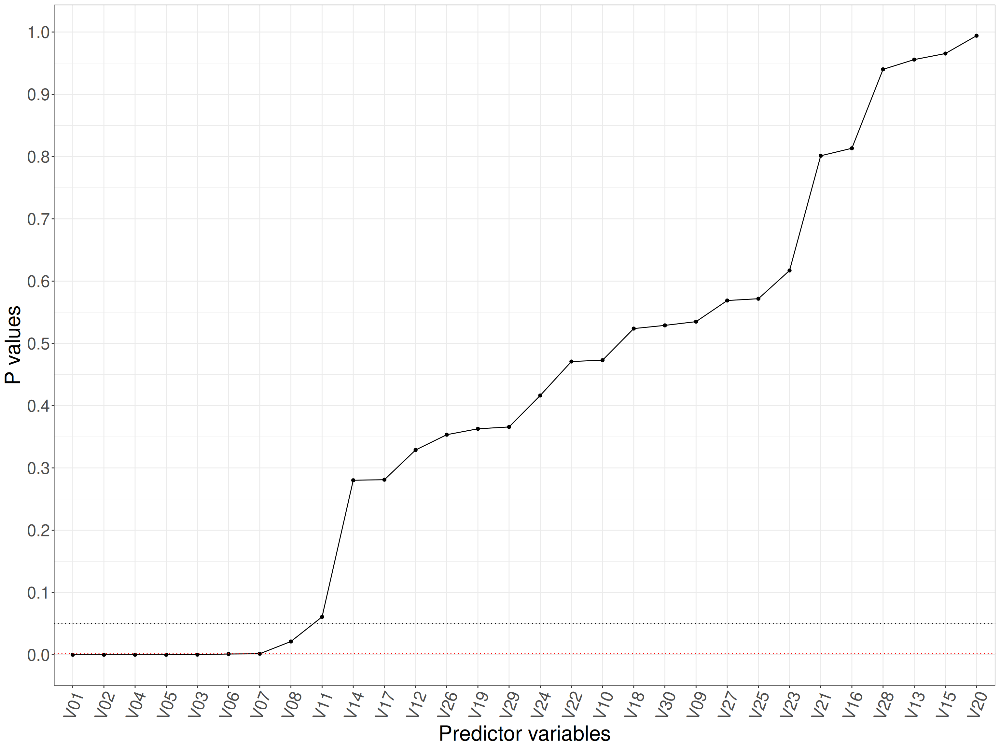

This developed to help me do an glossary entry for my OMbook glossary on the Holm-Bonferroni method or correction. I started with a general population null model and then tweaked it so that some of the population variables were non-null. In this simulation the test was a single sample t-test testing then null model that the population mean for the variable was zero but the principles are exactly the same for any null hypothesis test being conducted across multiple hypotheses. In fact, the tests don’t even have to be the same tests, you could apply the logic to all the null hypothesis tests of any sort across a paper. Having said that I’ve never seen that done and the whole issue of handling the multiple tests problem only ever seems to come up for “families” of the same tests within a paper, e.g. of a set of sociodemographic predictors against early termination or whether different clinicians in a service have different early termination rates … etc.
Global population null model
Show code
set.seed(123456)
n <- 1500
nVars <- 30
vecMeans <- c(rep(0, nVars))
matCov <- matrix(rep(0, nVars * nVars),
nrow = nVars)
diag(matCov) <- rep(1, nVars)
matDat <- MASS::mvrnorm(n = n, mu = vecMeans, Sigma = matCov)
colnames(matDat) <- str_c("V",
sprintf("%02.0f", 1:nVars))
as_tibble(matDat,
.name_repair) -> tibDatNull
tibDatNull %>%
pivot_longer(cols = everything(),
names_to = "PredVar") %>%
group_by(PredVar) %>%
summarise(mean = mean(value),
p = t.test(value)$p.value) %>%
arrange(p) -> tibPvalsNull
alphaBonferroni = .05 / nVarsI generated my data using the mvrnorm() function in the MASS package which makes it trivially easy to simulate taking samples from Gaussian population distributions with any defined set of population means and covariances. I set the covariance matrix to independence so all the variables are uncorrelated with each other at the population level.
In this simulation I set n = 1500 and simulated 30 variables each with population variance 1 and population mean (the null) of zero.
So the Bonferroni test value is .05/30 = 0.0016667 and this is modelling the global null so the population means for all 30 variables are zero. As noted above, my test on the simulated sample was a single sample t-test on each variable. As noted above, the principles apply to absolutely any null hypothesis significance test (NHST), this use of the t-test is just nice and easy to write and very CPU efficient, not that you have to worry about that on modern machines!
Here is a plot of our p values for this sample.
Show code
ggplot(data = tibPvalsNull,
aes(x = reorder(PredVar,
p),
y = p)) +
geom_point() +
geom_line(group = 1) +
geom_hline(yintercept = .05,
linetype = 3) +
geom_hline(yintercept = alphaBonferroni,
linetype = 3,
colour = "red") +
scale_y_continuous("P values",
breaks = seq(0, 1, .1)) +
xlab("Predictor variables") +
theme(axis.text.x = element_text(angle = 70,
hjust = 1))
The multiple tests issue makes it likely with that many variables that we might see “false positives”: p values smaller than our conventional criterion of .05 that have arisen by chance. The smallest five p values from this simulation are these.
Show code
PredVar | mean | p |
|---|---|---|
V16 | -0.05899866 | 0.03008122 |
V01 | -0.05360094 | 0.03619070 |
V14 | -0.05147037 | 0.04191134 |
V19 | 0.04019983 | 0.11121251 |
V10 | 0.03873931 | 0.13102130 |
So we have 3 statistically significant predictor if we ignore the multiple tests challenge.
However, if we use the Bonferroni criterion of significance, 0.0016667 we have, as we want given that we know this dataset was created as a sample from a population in which the global null is true, of no variables with means statistically significantly different from zero.
Simulate non-null case
The point of the Holm-Bonferroni method is that it mitigates the very conservative nature of the simple Bonferroni “correction” so it increases the statistical power of testing so we want some non-null, i.e. non zero, population means to illustrate this.
Show code
set.seed(12345)
vecNonZeroMeans <- rev(c(.02, .03, .06, .075, .08, .09, .1, .13, .2, .25))
vecMeans <- c(vecNonZeroMeans,
rep(0, nVars - length(vecNonZeroMeans)))
matCov <- matrix(rep(0, nVars * nVars),
nrow = nVars)
diag(matCov) <- rep(1, nVars)
matDat <- MASS::mvrnorm(n = n,
mu = vecMeans,
Sigma = matCov)
colnames(matDat) <- str_c("V",
sprintf("%02.0f", 1:nVars))
as_tibble(matDat) -> tibDatNonNull
tibDatNonNull %>%
pivot_longer(cols = everything(),
names_to = "PredVar") %>%
group_by(PredVar) %>%
summarise(mean = mean(value),
p = t.test(value)$p.value) %>%
mutate(popMean = vecMeans) %>%
select(PredVar, popMean, everything()) %>%
arrange(p) -> tibPvalsNonNullWhat I have done now is to simulate taking a sample from a population where the variable means are not all zero but include population means of 0.25, 0.2, 0.13, 0.1, 0.09, 0.08, 0.075, 0.06, 0.03, 0.02 for the first five variables (but zero for the remaining 20 variables). As the simulation has set the population variances to 1 these variables have effect size differences from zero of the same values as those means.
Here is a plot of our p values for a sample from that population.
Show code
ggplot(data = tibPvalsNonNull,
aes(x = reorder(PredVar,
p),
y = p)) +
geom_point() +
geom_line(group = 1) +
geom_hline(yintercept = .05,
linetype = 3) +
geom_hline(yintercept = alphaBonferroni,
linetype = 3,
colour = "red") +
scale_y_continuous("P values",
breaks = seq(0, 1, .1)) +
xlab("Predictor variables") +
theme(axis.text.x = element_text(angle = 70,
hjust = 1))
The smallest ten p values are these.
Show code
tibPvalsNonNull %>%
filter(row_number() <= 10) %>%
flextable()PredVar | popMean | mean | p |
|---|---|---|---|
V01 | 0.250 | 0.30663675 | 0.000000000000000000000000000004489338 |
V02 | 0.200 | 0.20587503 | 0.000000000000008081070545747541243535 |
V04 | 0.100 | 0.14057877 | 0.000000064376120557721848234281221673 |
V05 | 0.090 | 0.13464959 | 0.000000088240152958377926422006080464 |
V03 | 0.130 | 0.09614595 | 0.000204095438438757552325128474812743 |
V06 | 0.080 | 0.08373301 | 0.001272635995415240511147159097049553 |
V07 | 0.075 | 0.08475325 | 0.001672923748795048307091981598659913 |
V08 | 0.060 | 0.05804323 | 0.021364405716811852437020391448641021 |
V11 | 0.000 | 0.04793579 | 0.060920853348219672351859799164230935 |
V14 | 0.000 | 0.02835146 | 0.280217454837319468463618932219105773 |
So if we again ignore the multiple tests challenge we have 8 statistically significant at the conventional .05 alpha criterion. (It’s called alpha as part of the whole NHST paradigm.)
PredVar | popMean | mean | p | alphaBonferroni | BonfSignificant |
|---|---|---|---|---|---|
V01 | 0.250 | 0.30663675 | 0.000000000000000000000000000004489338 | 0.001666667 | Sig |
V02 | 0.200 | 0.20587503 | 0.000000000000008081070545747541243535 | 0.001666667 | Sig |
V04 | 0.100 | 0.14057877 | 0.000000064376120557721848234281221673 | 0.001666667 | Sig |
V05 | 0.090 | 0.13464959 | 0.000000088240152958377926422006080464 | 0.001666667 | Sig |
V03 | 0.130 | 0.09614595 | 0.000204095438438757552325128474812743 | 0.001666667 | Sig |
V06 | 0.080 | 0.08373301 | 0.001272635995415240511147159097049553 | 0.001666667 | Sig |
V07 | 0.075 | 0.08475325 | 0.001672923748795048307091981598659913 | 0.001666667 | NS |
V08 | 0.060 | 0.05804323 | 0.021364405716811852437020391448641021 | 0.001666667 | NS |
However, if we use the Bonferroni criterion of significance, 0.0016667 we have 6 variables with means statistically significantly different from zero (though 10). This failure to detect five variables as having non zero means might be sampling luck, or that the sample size was simply too small to give the necessary power to detect the smaller population means but it is definitely hampered by the Bonferroni correction being very conservative with that new alpha value of 0.0016667. The point of the Holm-Bonferroni method is not to lose as much statistical power as you do using the Bonferroni correction itself and it does that by applying different alpha levels to different variables in a sensible way.
Hohberg-Bonferroni method
It is a step-by-step procedure. First the p values are put in increasing order. Then the first, i.e. the smallest p value, is tested against the Bonferroni criterion, then the second is tested using the Bonferroni approach but eliminating the first variable so the new p value criterion is .05 / (nVars - 1), then the next is tested against the criterion of .5 / (nVars - 2). You are basically applying the Bonferroni correction to the diminishing number of predictor variables. As soon as you hit a non-significant p value you stop the process and any remaining tests are declared not statistically significant.
Here’s how that worked for my simulated data.
Show code
tibPvalsNonNull %>%
mutate(alphaBonferroni = alphaBonferroni,
alphaHolmB = if_else(row_number() == 1,
alphaBonferroni,
.05 / (nVars - row_number() - 1)),
### messy correction to the two last ones: 0/0 and -.05
alphaHolmB = if_else(is.infinite(alphaHolmB) | alphaHolmB < 0,
.05, # arbitrary, you're never going to use it!
alphaHolmB),
BonfSignificant = if_else(p < alphaBonferroni,
"Sig",
"NS"),
HolmBonfSig = if_else(p < alphaHolmB,
"Sig",
"NS"),
### now get the sequential stopping rule into this
HolmBonfSig = if_else(row_number() > 1 &
lag(HolmBonfSig)== "NS",
"Stopped",
HolmBonfSig),
### now blank out the alphaHolmB values where the process had stopped
alphaHolmB = if_else(HolmBonfSig == "Stopped",
NA_real_,
alphaHolmB)) %>%
flextable() %>%
bg(i = ~ BonfSignificant == "Sig",
j = 7,
bg = "green") %>%
bg(i = ~ HolmBonfSig == "Sig",
j = 8,
bg = "green") PredVar | popMean | mean | p | alphaBonferroni | alphaHolmB | BonfSignificant | HolmBonfSig |
|---|---|---|---|---|---|---|---|
V01 | 0.250 | 0.3066367528 | 0.000000000000000000000000000004489338 | 0.001666667 | 0.001666667 | Sig | Sig |
V02 | 0.200 | 0.2058750274 | 0.000000000000008081070545747541243535 | 0.001666667 | 0.001851852 | Sig | Sig |
V04 | 0.100 | 0.1405787748 | 0.000000064376120557721848234281221673 | 0.001666667 | 0.001923077 | Sig | Sig |
V05 | 0.090 | 0.1346495903 | 0.000000088240152958377926422006080464 | 0.001666667 | 0.002000000 | Sig | Sig |
V03 | 0.130 | 0.0961459459 | 0.000204095438438757552325128474812743 | 0.001666667 | 0.002083333 | Sig | Sig |
V06 | 0.080 | 0.0837330054 | 0.001272635995415240511147159097049553 | 0.001666667 | 0.002173913 | Sig | Sig |
V07 | 0.075 | 0.0847532486 | 0.001672923748795048307091981598659913 | 0.001666667 | 0.002272727 | NS | Sig |
V08 | 0.060 | 0.0580432344 | 0.021364405716811852437020391448641021 | 0.001666667 | 0.002380952 | NS | NS |
V11 | 0.000 | 0.0479357856 | 0.060920853348219672351859799164230935 | 0.001666667 | NS | Stopped | |
V14 | 0.000 | 0.0283514628 | 0.280217454837319468463618932219105773 | 0.001666667 | NS | Stopped | |
V17 | 0.000 | 0.0272549052 | 0.281138937242195185994830808340338990 | 0.001666667 | NS | Stopped | |
V12 | 0.000 | -0.0252007213 | 0.328811953585823490975315053219674155 | 0.001666667 | NS | Stopped | |
V26 | 0.000 | -0.0243192336 | 0.353390731738433161446266694838413969 | 0.001666667 | NS | Stopped | |
V19 | 0.000 | -0.0237593475 | 0.362881134637285884814161818212596700 | 0.001666667 | NS | Stopped | |
V29 | 0.000 | -0.0227688667 | 0.365830648622573972872373815334867686 | 0.001666667 | NS | Stopped | |
V24 | 0.000 | 0.0208459098 | 0.416352767944992985249541561643127352 | 0.001666667 | NS | Stopped | |
V22 | 0.000 | 0.0187954683 | 0.470882125745471280531262436852557585 | 0.001666667 | NS | Stopped | |
V10 | 0.020 | -0.0176639717 | 0.473077131835015429750512794271344319 | 0.001666667 | NS | Stopped | |
V18 | 0.000 | -0.0161434715 | 0.523788338512839346527982797852018848 | 0.001666667 | NS | Stopped | |
V30 | 0.000 | 0.0162922358 | 0.528924650518951322553107274870853871 | 0.001666667 | NS | Stopped | |
V09 | 0.030 | 0.0157193497 | 0.534932605646283088063341892848256975 | 0.001666667 | NS | Stopped | |
V27 | 0.000 | -0.0150174602 | 0.568842845952657327757151506375521421 | 0.001666667 | NS | Stopped | |
V25 | 0.000 | 0.0148515160 | 0.571732583539841243691626004874706268 | 0.001666667 | NS | Stopped | |
V23 | 0.000 | -0.0123673349 | 0.617053958310734618208925894577987492 | 0.001666667 | NS | Stopped | |
V21 | 0.000 | 0.0065312969 | 0.801284356558894517164048920676577836 | 0.001666667 | NS | Stopped | |
V16 | 0.000 | 0.0062075082 | 0.813304624866326486554157781938556582 | 0.001666667 | NS | Stopped | |
V28 | 0.000 | -0.0018837081 | 0.940039262242496231891664137947373092 | 0.001666667 | NS | Stopped | |
V13 | 0.000 | -0.0014187013 | 0.955681797459660864468844465591246262 | 0.001666667 | NS | Stopped | |
V15 | 0.000 | -0.0011164479 | 0.965408395976037336794206566992215812 | 0.001666667 | NS | Stopped | |
V20 | 0.000 | -0.0001889352 | 0.994034047698343026233658292767358944 | 0.001666667 | NS | Stopped |
That shows that for this particular sample, sample size and set of non-null population means the Holm-Bonferroni method was sufficiently less conservative than the simple Bonferroni method as it classified one more of the non-null variables as statistically significantly different from zero and I hope, more to the point here, that it illustrates how the method works, relaxing the alpha criterion a little for each variable after variable with the lowest p value (if that was low enough to be significant using the Bonferroni criterion), continuing that until it hits a non-significant finding when the process stops and all remaining variables are classified as non-significant.
Summary
Well, there you have it: the fairly simple process behind the method.
I am not statistician enough to be able to explain why it will always work and always be no more conservative than the simple Bonferroni method but I trust that there are proofs of that.
There are methods that gain even more improvement in statistical power, the Holm-Šidák method and the Hochberg and Hommel procedures, but I think that they can fail in the presence of non-zero relationships (correlations) between the variables, at least that seems to be true for the Hochberg procedure according to https://en.wikipedia.org/wiki/Holm%E2%80%93Bonferroni_method#Adjusted_p-values but now I am getting out of my depth and beyond what I think is needed for all but the most determined worshippers of the NHST in our field as I think we are getting to that point where the seductive clarity of the maths might be blinding us to thinking carefully about what our null hypotheses and alternatives really are and whether the NHST is what we need!
Visit count
free counter
Last updated
18/09/2026 at 19:20